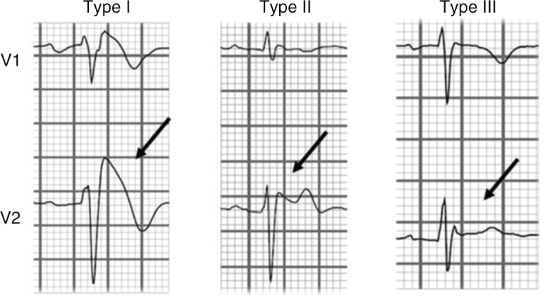
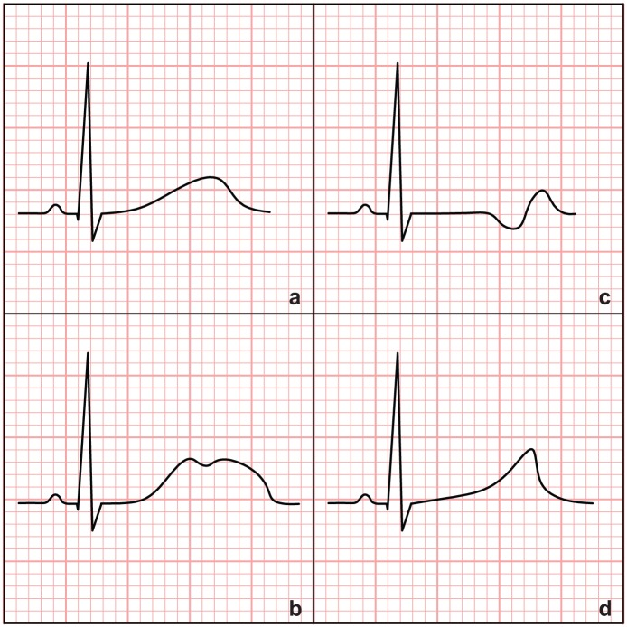
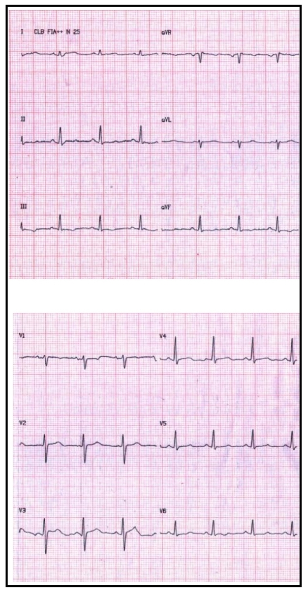
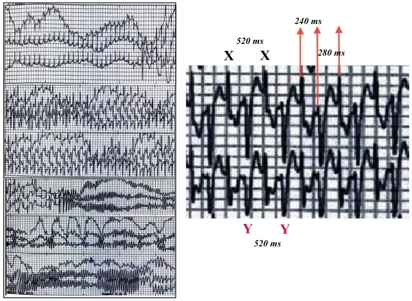

定義與定位
心室性心律不整的第一個分岔是「有沒有結構性心臟病」：有 → 疤痕折返（心肌梗塞後最多，見 Ventricular tachycardia）；沒有 → 想離子通道病或特發性心室頻脈。本篇處理的就是後者這一支，它們是可命名、可遺傳、可家族篩檢的症候群，而不是單一心電圖現象。
主表 — 一張表分開五個症候群（＋一個結構性對照）
| 症候群 | 基因 | 電流／機制 | 靜息心電圖 | 典型誘發情境 | 第一線治療 |
|---|---|---|---|---|---|
| LQT1 | KCNQ1 | I_Ks 功能喪失 | QT 延長 ＋ 寬底 T 波 | 運動，尤其游泳 | beta-blocker（三型中反應最好） |
| LQT2 | KCNH2（hERG） | I_Kr 功能喪失 | QT 延長 ＋ 切跡狀低振幅 T 波 | 突發聲響（鬧鐘、電話）、情緒、產後 | beta-blocker ＋ 嚴防低血鉀 |
| LQT3 | SCN5A 功能增強 | 晚期鈉電流（late I_Na） 持續內流 | QT 延長 ＋ ST 段拉長後才出現 T 波 | 睡眠與休息 | beta-blocker 效果較差 → 加 mexiletine |
| Brugada syndrome | SCN5A 功能喪失（僅約 2–3 成找得到） | 峰值 I_Na 減少 → 右心室出口再極化離散 | V1–V2 type 1 coved ST 上升 | 發燒（最重要）、睡眠、飽餐、飲酒 | ICD ＋ 避誘因；藥物只有 quinidine |
| CPVT | RYR2（體染色體顯性，最常見）、CASQ2（隱性） | 肌漿網鈣外漏 → 延遲後去極化 | 完全正常 | 運動、情緒 | 非選擇性 beta-blocker ＋ flecainide |
| Short QT syndrome | KCNH2 等功能增強 | I_Kr 增強 → 再極化過快 | QTc 極短、ST 幾乎消失、高尖對稱 T 波 | 不特定，休息時亦可 | ICD；藥物 quinidine |
| （對照）ARVC | PKP2 等 desmosome 基因 | 結構性：右心室心肌被纖維脂肪取代 | epsilon wave、V1–V3 T 波倒置 | 運動（耐力運動加速惡化） | 禁競技運動、beta-blocker、ICD |
LQTS 亞型已知 1–17 型，但 LQT1–3 合計佔九成以上，其餘罕見到臨床上不影響決策。
病因與機制
再極化這件事只有兩種壞法：慢下來（動作電位拉長 → 早期後去極化）或變得不整齊（跨心壁離散 → 局部再進入）。加上鈣處理異常這條獨立路徑，三條線最後匯進同一個結局。
flowchart TD A["鉀或鈉通道基因變異"] --> B["再極化電流失衡"] B --> C["動作電位延長<br/>QT 拉長"] B --> D["跨心壁再極化離散<br/>右心室出口"] E["RYR2 或 CASQ2 變異"] --> F["肌漿網鈣外漏"] C --> G["早期後去極化 EAD"] F --> H["延遲後去極化 DAD"] G --> I["觸發活性<br/>多型性心室頻脈"] H --> I D --> I I --> J["心室顫動與猝死"] classDef key fill:#263238,stroke:#000,color:#fff,font-weight:bold class J key
臨床表現
- 典型：運動或情緒誘發的暈厥／前暈厥（LQT1、CPVT）、睡夢中或休息時的瀕死喘息與猝死（LQT3、Brugada）、心悸
- 提示性：年輕（＜40 歲）猝死家族史、被診斷為「藥物控制不良的癲癇」（其實是心律不整性暈厥合併缺氧性抽搐）、發燒時發作（Brugada）
- 少見但重要：不明原因溺水或泳池／浴缸溺斃（LQT1、CPVT）、單一車輛的不明原因車禍、家族中的嬰兒猝死症候群、Atrial fibrillation 出現在 30 歲以下（想 Short QT 或 LQTS）
→ 相關主訴流程：Syncope↗、Sudden cardiac death↗
診斷
共通起手式三件事：量 QTc（Bazett 校正）、排除後天原因（藥物、Hypokalemia、低血鎂、低血鈣、心搏過緩、甲狀腺功能低下）、Echocardiography 確認心臟結構正常。後天性 QT 延長遠比先天性常見，而且可以矯正——先停藥、先補電解質，再談基因病。
| 症候群 | 診斷門檻／決定性檢查 |
|---|---|
| LQTS | Class I（即可診斷）：反覆 12 導程 QTc ≥480 ms、或 LQTS risk score（Schwartz）＞3 分、或 找到致病基因變異（不論 QT 長度）。Class IIa（應考慮，不等於確診）：不明原因暈厥 ＋ 反覆 12 導程 QTc ≥460 ms ＋ 排除次發原因。（2013 HRS 共識數字不同：QTc ≥500 ms 或 risk score ≥3.5——看題目問哪一版） |
| Brugada syndrome | 心電圖型態：V1–V2（導程可上移至第 2、3 肋間；標準為第 4 肋間）、J 點抬高 ≥2 mm、穹窿型（coved）ST 接負向 T 波；type 2 saddleback 不算診斷。診斷條件（2022 ESC）：自發性 type 1 → 直接診斷；藥物激發的 type 1 單獨存在只列 IIb，需再合併心律不整性暈厥／夜間瀕死喘息、家族 Brugada 史、或家族 ＜45 歲不明原因猝死其一才到 IIa。（2013 HRS 共識則自發或激發皆可診斷——兩版不同） |
| CPVT | 運動負荷測試：心率約 100–120 bpm 起出現心室早期收縮 → 二聯律 → 雙向性心室頻脈（bidirectional VT，QRS 電軸逐跳交替） → 多型性心室頻脈。靜息心電圖正常，所以不做運動測試就診斷不出來 |
| Short QT syndrome | 2022 ESC 全部只到「應考慮／可考慮」，沒有 Class I 的診斷門檻：QTc ≤320 ms → 應考慮（IIa）；QTc 320–360 ms ＋ 心律不整性暈厥 → 應考慮（IIa）；QTc 320–360 ms ＋ 家族 ＜40 歲猝死 → 可考慮（IIb）。（2015 ESC 舊版才是「≤340 ms 即診斷（Class I）」——別把兩版混用） |
| ARVC | Task Force Criteria 綜合影像（右心室擴大與局部運動異常）、心電圖、心律不整、病理與家族史；不是靠單一項目 |
正常 QTc 上限：男性約 450 ms、女性約 460 ms；QTc ＞500 ms 是尖端扭轉型心室頻脈的高風險門檻（急性處置寫在 Ventricular tachycardia，本篇不重複）。


| 靜息 ECG | 活動時的 bidirectional VT |
|---|---|
 |
 |
鑑別診斷
| 要排除的 | 支持它的線索 | 怎麼分開 |
|---|---|---|
| 後天性 QT 延長 | 有用延長 QT 的藥、低血鉀／低血鎂、心搏過緩、Hypokalemia | 停藥 ＋ 矯正電解質後複查心電圖——QTc 回到正常就不是先天性 |
| Brugada phenocopy | 高血鉀、鈉通道阻斷劑中毒、右心室缺血、肺栓塞、心包炎、高熱 | 矯正誘因後心電圖恢復；真正的 Brugada 在誘因移除後仍可被激發試驗誘發 |
| 前壁 ST 段上升型心肌梗塞 | 胸痛、對應導程互為鏡像、心肌旋轉蛋白升高 | 型態不同（Brugada 是 coved 且限於 V1–V2、無互為鏡像的壓低）；見 EKG ischemia |
| 早期再極化型態 | J 點抬高在下壁與側壁導程、年輕運動員常見 | 位置不同（不在 V1–V2）；有症狀且有猝死家族史者才算早期再極化症候群 |
| HCM | 心雜音隨 Valsalva 增強、心電圖左心室肥厚 ＋ 深倒 T 波 | Echocardiography 看到心室壁增厚——結構性，不是離子通道病 |
| ARVC | 右胸導程 T 波倒置、epsilon wave、運動誘發、LBBB 型心室頻脈 | 影像可見右心室擴大與局部運動異常；desmosome 基因 |
| 特發性心室頻脈（右心室流出道型） | 心臟結構完全正常、單型性、預後好 | 見 Ventricular tachycardia；可電燒根治，與離子通道病的處置完全不同 |
治療
分層次的共通骨架
| 層次 | 內容 |
|---|---|
| ① 移除誘因（每一個症候群都做，成本最低） | 停用禁忌藥物、矯正電解質、Brugada 積極退燒、避免脫水與大量飲酒 |
| ② 藥物 | LQTS：beta-blocker（propranolol、nadolol 這類非選擇性優先）｜LQT3 加 mexiletine｜CPVT：nadolol 或 propranolol ＋ flecainide｜Brugada／Short QT：quinidine（其餘口服藥無效） |
| ③ 生活與運動限制 | 見下方 |
| ④ 裝置 | ICD——次級預防（曾發生非可逆原因的心跳停止或持續性心室頻脈）證據最強；初級預防依各症候群風險分層。門檻、等待期與試驗證據全部寫在 ICD，此處不重複 |
| ⑤ 進階 | 左側心臟交感神經去除術（LCSD）：用於 CPVT 或 LQTS 已用足量 beta-blocker 仍反覆發作者｜Brugada 反覆電風暴可考慮右心室出口心外膜基質電燒 |
各症候群的重點差異
| 症候群 | beta-blocker | 專屬藥物 | 專屬的非藥物處置 |
|---|---|---|---|
| LQTS | 核心；LQT1 反應最好、LQT2 次之、LQT3 較差 | LQT3 加 mexiletine（縮短 QT） | 避免所有延長 QT 的藥；補足鉀鎂 |
| CPVT | 核心且救命；用非選擇性（nadolol 最佳）、要用到足量 | flecainide（直接抑制 RyR2 鈣釋放） | LCSD；ICD 要謹慎（見下方陷阱） |
| Brugada syndrome | 沒有角色（且屬應避免藥物） | quinidine（阻斷 Ito） | 發燒立即積極退燒；電風暴用 isoproterenol |
| Short QT syndrome | 無效 | quinidine（延長 QT） | 以 ICD 為主 |
| ARVC | 有角色（減少心律不整負擔） | 需要時 amiodarone、sotalol（見 Antiarrhythmics） | 嚴格禁止競技與高強度耐力運動——運動本身會加速疾病進展 |
併發症與預後
- 要盯的併發症：多型性心室頻脈／尖端扭轉型心室頻脈 → 心室顫動 → Sudden cardiac death↗；電風暴（Brugada 與 CPVT 皆可）；ICD 不適當放電；Short QT 的心房顫動（Atrial fibrillation 出現在極年輕族群）；長期反覆事件後的缺氧腦病變
| 面向 | 高風險指標 |
|---|---|
| 事件史 | 曾心跳停止或曾在足量藥物下仍暈厥——最強的單一預後因子，任何症候群皆然 |
| 心電圖 | LQTS：QTc ＞500 ms（＞550 ms 更高）；Brugada：自發性 type 1（比藥物激發才出現者風險高得多） |
| 基因型 | LQTS 三型的誘因、藥物反應與風險不同（LQT2 女性、LQT3 事件致死率較高）；CPVT 的 RYR2 變異位置影響嚴重度 |
| 其他 | 發病年齡早、家族中有猝死事件、藥物順從性差 |
禁忌與陷阱
相關連結
- Ventricular tachycardia — 寬 QRS 心搏過速的判讀、尖端扭轉的急性處置、電風暴，全部在那裡
- ICD — 適應症門檻、等待期、試驗證據與併發症
- Beta blocker↗、Antiarrhythmics — LQTS 與 CPVT 的骨幹用藥；延長 QT 的完整藥物清單
- Sudden cardiac death↗、Syncope↗ — 首發表現與最重要的紅旗主訴
- HCM、Heart failure — 「遺傳 ＋ 結構性」的對照組；猝死風險分層的另一條路
- Hypokalemia — 先天長 QT 最常見的加乘因子
- Echocardiography、EKG ischemia — 排除結構性心臟病；Brugada 與前壁 ST 上升的分辨
- Atrial fibrillation — 極年輕的心房顫動要回頭想 Short QT 與 LQTS